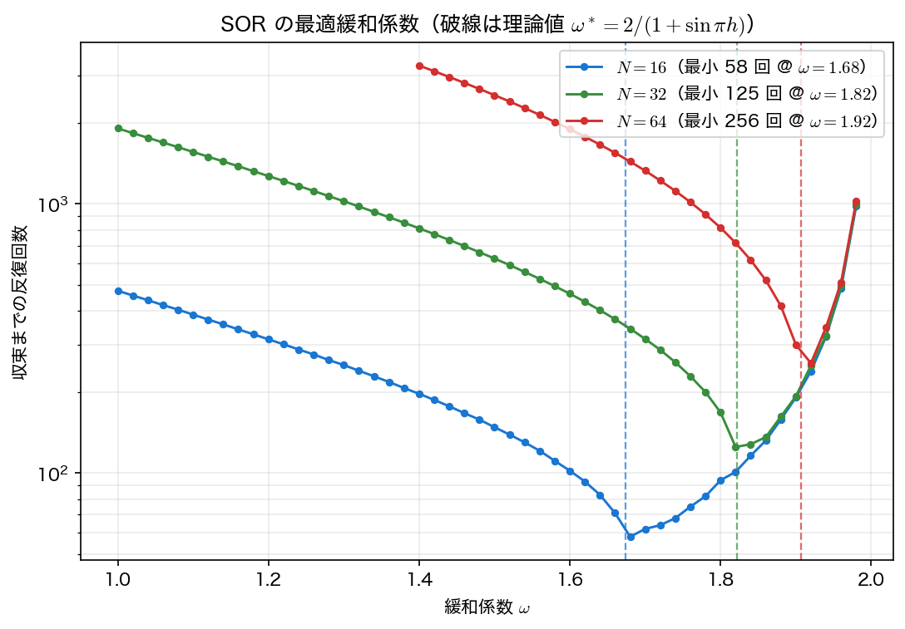

定常反復法
前ページで、\(n=(N-1)^2\) 元の連立1次方程式を直接法で解こうとすると、\(N=128\) 程度で行列がメモリに載らなくなることを見た。しかしよく考えると、私たちは行列 \(A\) を配列として持つ必要がない。5点差分の各行は「中心が \(4/h^2\)、上下左右が \(-1/h^2\)」と決まりきっており、格子の添字さえあれば係数は暗算で出る。
この観察から出発するのが第3回の定常反復法である。本ページでは、ヤコビ法・ガウス＝ザイデル法・SOR を行列を一切作らずに実装し、その速さの違いを実測する。
平均値の性質を繰り返す
5点差分の式を中心の \(u_{i,j}\) について解いた形
は、そのまま反復の更新式として使える。右辺の4点の値がまだ正しくなくても、この操作を全格子点で何度も繰り返せば、やがて全点が「上下左右の平均＋湧き出し」という条件を同時に満たすようになる——これが定常反復法の直感である。
第3回の一般形 \(A=D-L-U\)（対角・下三角・上三角）に照らすと、\(4/h^2\) が \(D\)、隣接4点の \(-1/h^2\) が \(-L-U\) にあたる。つまり上の式は \(u^{(k+1)}=D^{-1}\bigl((L+U)u^{(k)}+b\bigr)\) そのもの、すなわちヤコビ法である。行列で書けば重々しいが、格子の上ではわずか1行のコードになる。
収束の判定
反復をいつ止めるかは残差（residual）で決める。
本回はすべて相対残差 \(<10^{-8}\) を収束判定に使う。残差の計算も行列を作らずにでき、各点で
double au = (4.0*u[j][i] - u[j][i-1] - u[j][i+1] - u[j-1][i] - u[j+1][i]) / h2;
double r = f[j][i] - au;
とすればよい。
残差がゼロに近づいても、誤差はゼロにならない
反復法が小さくするのは離散方程式 \(Au=b\) の残差であって、真の解 \(u(x,y)\) との誤差ではない。相対残差を \(10^{-8}\) にしようが \(10^{-14}\) にしようが、数値解と厳密解の差は \(O(h^2)\) の離散化誤差で頭打ちになる。実際、後の実行結果では3手法すべてが同じ最大誤差 \(8.0358\times10^{-4}\) に到達している。
誤差には出所の違う2つの成分がある。
- 離散化誤差：\(O(h^2)\)。格子を細かくするしか減らせない。
- 反復誤差：反復を続ければいくらでも減らせる。
賢い選び方は「反復誤差を離散化誤差より十分小さくしたら止める」ことである。それ以上回しても答えは1桁も良くならない。
ヤコビ法
新しい値をすべて古い値だけから計算する。
for (int j = 1; j < N; j++)
for (int i = 1; i < N; i++)
un[j][i] = 0.25*(u[j][i-1] + u[j][i+1] + u[j-1][i] + u[j+1][i] + h2*f[j][i]);
/* 全点そろえてから入れ替える */
配列を2本使うことが必須である。1本で上書きすると、右辺の \(u_{i-1,j}\) がすでに新しい値になってしまい別の手法になる（それが次のガウス＝ザイデル法である）。第9回の FTCS と同じ注意点である。
ヤコビ法の性質は第3回で述べたとおりで、2次元でもそのまま成り立つ。
- 各点の更新が完全に独立である。計算の順序を変えても結果が変わらない。したがって第14回の並列計算では、そのまま全スレッドに分配できる。
- そのぶん収束は遅い。1回の反復で情報は隣の格子点までしか伝わらないので、領域の端から端まで情報が届くには少なくとも \(N\) 回の反復が必要になる。
ガウス＝ザイデル法
配列を1本にして、計算した値をその場で上書きする。左下から右上へ走査する（辞書式順序の掃引）と、\(u_{i-1,j}\) と \(u_{i,j-1}\) はすでに新しい値になっている。
for (int j = 1; j < N; j++)
for (int i = 1; i < N; i++)
u[j][i] = 0.25*(u[j][i-1] + u[j][i+1] + u[j-1][i] + u[j+1][i] + h2*f[j][i]);
コードはヤコビ法より短くなる（作業配列も入れ替えも不要）のに、反復回数はちょうど半分になる。最新の情報を即座に使うぶん、情報が1回の掃引で走査方向へ遠くまで伝わるからである。
ただし代償もある。
- 走査の順序で結果が変わる。右上から左下へ走査すれば別の反復列になる（収束先は同じ）。
- 各点の更新が独立でない。左と下の点の計算が終わるまで待たなければならず、素朴には並列化できない。第14回では、この依存関係を断ち切る赤黒順序（red-black ordering）を扱う。
SOR：行き過ぎてみる
ガウス＝ザイデル法の反復を観察すると、解は目標へ向かって同じ向きに少しずつ進んでいくことが多い。それなら、毎回の修正量を少し大きめに取れば早く着くのではないか——これが逐次過緩和法（successive over-relaxation, SOR）の発想である。
ガウス＝ザイデル法が出す値を \(u^{\text{GS}}_{i,j}\) と書き、実際の更新をその方向へ \(\omega\) 倍だけ進める。
double gs = 0.25*(u[j][i-1] + u[j][i+1] + u[j-1][i] + u[j+1][i] + h2*f[j][i]);
u[j][i] = (1.0 - w)*u[j][i] + w*gs;
- \(\omega=1\) ならガウス＝ザイデル法そのもの
- \(\omega<1\) は低緩和（under-relaxation）。振動しやすい問題を落ち着かせるのに使う
- \(1<\omega<2\) が過緩和（over-relaxation）。ポアソン方程式ではこちらが効く
- \(\omega\ge2\) では必ず発散する（第3回で述べたカーンの定理）
驚くべきことに、単位正方形上の5点差分については最適な \(\omega\) が閉じた式で分かっている。
（導出は次ページで行う。）\(N=32\) なら \(\omega^*=1.8215\) である。この1つの数を入れるだけで、反復回数はガウス＝ザイデル法の \(1910\) 回から \(120\) 回へ——16分の1に減る。コードの変更は1行、追加の計算量はゼロである。

この図から実用上の教訓が2つ読み取れる。
- \(\omega\) の選択は当たり外れが大きい。\(N=64\) では最適値で \(256\) 回だが、\(\omega=1\)（ガウス＝ザイデル法）だと \(7643\) 回、\(\omega=1.98\) 付近でも \(10^3\) 回を超える。
- 外すなら \(\omega^*\) のわずかに上。谷のすぐ近くでは左側（\(\omega<\omega^*\)）のほうが立ち上がりが急なので、同じ幅だけ外すなら右側のほうが被害が小さい。ただし右には \(\omega=2\) の壁があり、\(N=64\)（\(\omega^*=1.9065\)）では余裕が \(0.09\) しかない。「大きめ」が許されるのはごくわずかな範囲だけである。
なお \(\omega^*\) の閉じた式が使えるのは、単位正方形・一様格子・ディリクレ境界という理想的な場合に限られる。複雑な領域では数回の試し打ちで探すか、より頑健な共役勾配法に切り替えることになる。
サンプルコード
例題1 を \(N=32\)（未知数 \(961\)）で3手法により解き、反復回数と最大誤差を比較する。さらに \(\omega\) を振って SOR の感度を見る。行列 \(A\) はどこにも現れないことに注意してほしい。
#include <stdio.h>
#include <math.h>
/* 第10回 ポアソン方程式: 行列を作らない定常反復法
ヤコビ法・ガウス＝ザイデル法・SOR 法（第3回の2次元版）を比較する。
-Delta u = 2 pi^2 sin(pi x) sin(pi y), u|_boundary = 0
厳密解: u(x,y) = sin(pi x) sin(pi y) */
static const double PI = 3.14159265358979323846;
/* 相対残差 ||f - A u||_2 / ||f||_2 */
static double rel_residual(int N, double h2, double u[N+1][N+1], double f[N+1][N+1])
{
double rs = 0.0, fs = 0.0;
for (int j = 1; j < N; j++)
for (int i = 1; i < N; i++) {
double au = (4.0*u[j][i] - u[j][i-1] - u[j][i+1] - u[j-1][i] - u[j+1][i]) / h2;
double r = f[j][i] - au;
rs += r*r;
fs += f[j][i]*f[j][i];
}
return sqrt(rs) / sqrt(fs);
}
static double max_error(int N, double h, double u[N+1][N+1])
{
double emax = 0.0;
for (int j = 1; j < N; j++)
for (int i = 1; i < N; i++) {
double e = fabs(u[j][i] - sin(PI*i*h)*sin(PI*j*h));
if (e > emax) emax = e;
}
return emax;
}
/* method: 0 = ヤコビ, 1 = ガウス＝ザイデル, 2 = SOR（omega を使う） */
static int solve(int N, int method, double omega, double tol, int maxit, double *err)
{
double h = 1.0/N, h2 = h*h;
double u[N+1][N+1], un[N+1][N+1], f[N+1][N+1];
for (int j = 0; j <= N; j++)
for (int i = 0; i <= N; i++) {
u[j][i] = 0.0; /* 初期値と境界値（同時に 0）*/
un[j][i] = 0.0;
f[j][i] = 2.0*PI*PI*sin(PI*i*h)*sin(PI*j*h);
}
int it = 0;
while (it < maxit) {
if (method == 0) { /* ヤコビ法: 更新は全点そろえてから */
for (int j = 1; j < N; j++)
for (int i = 1; i < N; i++)
un[j][i] = 0.25*(u[j][i-1] + u[j][i+1] + u[j-1][i] + u[j+1][i]
+ h2*f[j][i]);
for (int j = 1; j < N; j++)
for (int i = 1; i < N; i++) u[j][i] = un[j][i];
} else { /* GS / SOR: その場で上書き */
double w = (method == 1) ? 1.0 : omega;
for (int j = 1; j < N; j++)
for (int i = 1; i < N; i++) {
double gs = 0.25*(u[j][i-1] + u[j][i+1] + u[j-1][i] + u[j+1][i]
+ h2*f[j][i]);
u[j][i] = (1.0 - w)*u[j][i] + w*gs;
}
}
it++;
if (rel_residual(N, h2, u, f) < tol) break;
}
*err = max_error(N, h, u);
return it;
}
int main(void)
{
int N = 32;
double h = 1.0/N;
double tol = 1e-8;
double w_opt = 2.0/(1.0 + sin(PI*h));
printf("=== 2次元ポアソン方程式を定常反復法で解く（N=%d, 未知数 %d）===\n",
N, (N-1)*(N-1));
printf("収束判定: ||f - A u||_2 / ||f||_2 < %.0e\n\n", tol);
printf(" 手法 反復回数 最大誤差\n");
printf("-----------------------------------------------\n");
double err;
int it;
it = solve(N, 0, 0.0, tol, 200000, &err);
printf(" ヤコビ法 %8d %10.4e\n", it, err);
it = solve(N, 1, 0.0, tol, 200000, &err);
printf(" ガウス＝ザイデル法 %8d %10.4e\n", it, err);
it = solve(N, 2, w_opt, tol, 200000, &err);
printf(" SOR (omega=%.5f) %8d %10.4e\n", w_opt, it, err);
printf("\n最大誤差はどの手法でもほぼ同じ %.4e である。\n", err);
printf("これは離散化誤差 O(h^2) であり、反復法の違いではなく格子の粗さで決まる。\n");
printf("反復法が変えるのは「そこへ到達するまでの手間」だけである。\n");
printf("\n=== SOR の緩和係数 omega を変えてみる（N=%d）===\n", N);
printf(" omega 反復回数\n");
printf("---------------------\n");
double ws[] = {1.0, 1.2, 1.4, 1.6, 1.8, w_opt, 1.9, 1.95, 1.99};
for (int t = 0; t < 9; t++) {
it = solve(N, 2, ws[t], tol, 200000, &err);
printf(" %6.4f %8d%s\n", ws[t], it, (t == 5) ? " <- 理論最適 2/(1+sin(pi h))" : "");
}
/* 作図用: omega を 0.02 刻みで振り、格子を変えて3本ぶん測る。
N=64 は omega が小さいと極端に遅いので 1.4 から始める */
FILE *fp = fopen("sor_omega.dat", "w");
if (fp == NULL) { perror("sor_omega.dat"); return 1; }
fprintf(fp, "# N omega iterations\n");
int Ns[] = {16, 32, 64};
for (int t = 0; t < 3; t++) {
double lo = (Ns[t] <= 32) ? 1.0 : 1.4;
int nw = (int)((1.98 - lo)/0.02 + 0.5) + 1;
for (int k = 0; k < nw; k++) {
double w = lo + 0.02*k;
fprintf(fp, "%d %.4f %d\n",
Ns[t], w, solve(Ns[t], 2, w, tol, 200000, &err));
}
}
fclose(fp);
return 0;
}
コンパイル・実行:
実行結果
=== 2次元ポアソン方程式を定常反復法で解く（N=32, 未知数 961）===
収束判定: ||f - A u||_2 / ||f||_2 < 1e-08
手法 反復回数 最大誤差
-----------------------------------------------
ヤコビ法 3817 8.0357e-04
ガウス＝ザイデル法 1910 8.0357e-04
SOR (omega=1.82147) 120 8.0358e-04
最大誤差はどの手法でもほぼ同じ 8.0358e-04 である。
これは離散化誤差 O(h^2) であり、反復法の違いではなく格子の粗さで決まる。
反復法が変えるのは「そこへ到達するまでの手間」だけである。
=== SOR の緩和係数 omega を変えてみる（N=32）===
omega 反復回数
---------------------
1.0000 1910
1.2000 1270
1.4000 812
1.6000 464
1.8000 168
1.8215 120 <- 理論最適 2/(1+sin(pi h))
1.9000 193
1.9500 391
1.9900 2001
読み取るべき点を挙げる。
- 最大誤差 \(8.0358\times10^{-4}\) は3手法で同一であり、しかも前ページの直接法の値と完全に一致する。3手法は「同じ連立方程式の同じ解」に到達している。反復法が変えるのは到達までの手間だけである。
- ヤコビ \(3817\) 回に対しガウス＝ザイデル \(1910\) 回、比はちょうど \(2.00\)。これは偶然ではなく、次ページで示す \(\rho_{\text{GS}}=\rho_J^2\) の帰結である。
- SOR は \(120\) 回。ガウス＝ザイデル法の \(1/16\)、ヤコビ法の \(1/32\) である。1反復あたりの計算量は3手法でほぼ同じ（\(O(n)\)）なので、この比がそのまま計算時間の比になる。
- \(\omega\) を \(1.8215\) から \(1.99\) へ動かすと \(120\to2001\) 回、逆に \(1.6\) へ下げると \(464\) 回。谷の右側が急峻であることが数値で確認できる。
可視化
poisson_iter.c は標準出力の9点の表とは別に、\(\omega\) を \(0.02\) 刻みで振った結果を sor_omega.dat（1列目 \(N\)、2列目 \(\omega\)、3列目 反復回数）に書き出す。\(N=16,\ 32,\ 64\) の3本ぶんがひとつのファイルに縦に並んでいるので、1列目で切り分けて描く。
import numpy as np
import matplotlib.pyplot as plt
d = np.loadtxt("sor_omega.dat") # 列: N, omega, iterations
fig, ax = plt.subplots(figsize=(7.5, 4.8))
for N in np.unique(d[:, 0]):
s = d[d[:, 0] == N]
line, = ax.semilogy(s[:, 1], s[:, 2], "o-", ms=3.5, lw=1.3)
k = np.argmin(s[:, 2])
ax.semilogy(s[k, 1], s[k, 2], "*", ms=13, color=line.get_color(),
label=f"$N = {N:.0f}$ (min {s[k, 2]:.0f} at $\\omega = {s[k, 1]:.2f}$)")
w_opt = 2.0 / (1.0 + np.sin(np.pi / N)) # 理論最適値
ax.axvline(w_opt, color=line.get_color(), ls="--", lw=1.0, alpha=0.7)
ax.set_xlabel("$\\omega$")
ax.set_ylabel("iterations to reach $10^{-8}$")
ax.set_title("SOR: the valley is narrow and asymmetric")
ax.grid(alpha=0.3, which="both")
ax.legend(fontsize=9)
fig.tight_layout()
fig.savefig("sor_omega.png", dpi=150)
plt.show()
実行:
破線が理論値 \(\omega^*=2/(1+\sin\pi h)\)、星印が実測の最小値である。\(N\) が大きいほど谷は鋭くなり、\(\omega\) を外したときの損が大きくなる。この計算は \(\omega\) 1点ごとに連立方程式を解き直すので、最後の掃引だけで数秒かかる。
まとめ
- ポアソン方程式の定常反復法は「各点を上下左右4点の平均＋ \(h^2f/4\) で置き換える」操作の繰り返しであり、行列 \(A\) を配列として持つ必要がない。メモリは \(O(n)\)、1反復の演算量も \(O(n)\)。
- ヤコビ法は新旧2本の配列が必要。各点の更新が独立で並列化しやすいが遅い。
- ガウス＝ザイデル法は配列1本でその場更新。コードが短いのに反復回数はヤコビ法のちょうど半分。ただし走査順序に依存し、素朴には並列化できない。
- SOR は \(u\leftarrow(1-\omega)u+\omega u^{\text{GS}}\)。単位正方形では最適値 \(\omega^*=2/(1+\sin\pi h)\) が分かっており、\(N=32\) で \(1910\to120\) 回（16分の1）になる。
- \(\omega\) の谷は非対称で、谷のすぐ近くでは左側のほうが急。外すなら \(\omega^*\) のわずかに上が安全だが、\(\omega\to2\) では再び急激に悪化し、\(\omega\ge2\) では発散する。
- 反復法が減らすのは反復誤差であって離散化誤差ではない。反復誤差が離散化誤差より十分小さくなったら止めるのが合理的である。